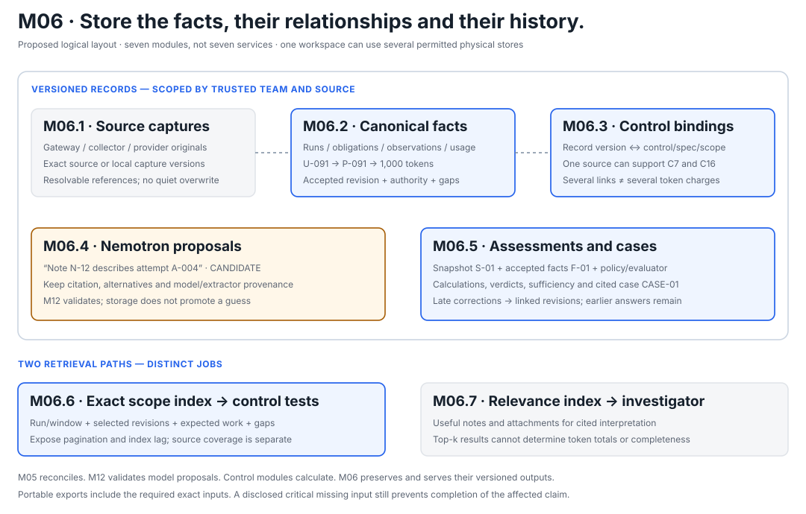

One place to investigate. Keep each kind of knowledge distinct.
M06 stores source records, accepted facts, control bindings, model proposals and assessment results so that one answer can be traced back to its exact inputs.
M05 acquires and reconciles. M06 preserves and serves the outputs. The control modules calculate verdicts, M12 validates model proposals, and M13 assembles a scoped case. Storage does not decide whether a statement is true or a control passed.
Proposed design: the examples below continue the synthetic FM-001 story. No database, integration, real evidence bundle or control result is claimed to be implemented. “One workspace” means a common query and reference model; it need not mean one physical database.

Relationships connect the records without changing their authority. A model proposal, a source assertion and an accepted operational fact have different status.
What do we actually store?
Kind of record
Example for FM-001
What it establishes
Captured source
The exact permitted gateway event, collector span and provider usage response, with source/capture versions.
What was captured from that source. It does not automatically establish that every source assertion is true.
A structured assertion with declared provenance/authority. Unknowns, conflicts and obligations also have explicit records.
Evidence binding
U-091 supports the C16 usage calculation under the pinned specification for FM-001.
How a particular version of a fact is used by a particular control/scope. It is not itself a passing result.
Model proposal
“Note N-12 appears to describe retry A-004,” with a source excerpt and CANDIDATE status.
A proposed relationship awaiting corroboration; it cannot silently enter required counts or verdicts.
Assessment and case
C16 assessment A16-01 records the calculation and sufficiency; case CASE-01 presents that assessment with sources, context and gaps.
The exact result of a particular test and the explanation presented around it.
Use separate typed tables or repositories with explicit references. Ordinary relationship tables are sufficient for many-to-many links; the architecture does not require a graph database or seven separate services.
Follow one execution into the workspace.
1 · Preserve three source observations.
M05 receives a gateway event, collector span and provider usage assertion describing P-091. M06 keeps their captured versions and the normalized observations OBS-301, OBS-302 and OBS-303, each with its raw reference. M03's trusted team/source namespaces prevent a coincidentally equal ID from another source or team becoming the same record.
Repeated identical delivery is handled idempotently. Changed content under the same source key remains a new captured version or conflict under the source contract. Do not overwrite an old capture just because a source lacks its own revision field.
2 · Store one accepted usage fact with lineage.
Under the M04 authority/counting rules, M05 supplies U-091: 1,000 tokens for P-091, linked to its run/attempt and the supporting observations. Its revision states which source values and reconciliation decision were accepted.
Other rows preserve independently expected work, unresolved usage and unmatched records. The workspace cannot hide a gap by storing only successfully reconciled calls.
3 · Bind the facts to controls.
M04's applicability and the declared evidence roles determine the bindings. The same observation may support recording evidence for C7 and corroborate measured usage for C16. Store separate relationship rows pointing to the same underlying record; do not copy the usage into a new charge per control.
4 · Store the control assessment.
M09 retrieves the exact in-scope accepted execution usage and completeness inputs, then calculates C16 using the pinned policy/evaluator. M06 stores its result, exact input references, scope, exceptions, evidence sufficiency and revision. Other control modules produce their own assessments.
In the M05 example, the first three calls total 8,000 and P-091 adds 1,000. The result is 9,000 only once, regardless of how many observations or bindings reference P-091. A satisfaction result additionally requires the declared coverage and reconciliation conditions.
5 · Store the investigator's case around that result.
The Nemotron investigator can add cited note interpretations, candidate links and a constrained explanation. M13 assembles the case against a frozen source snapshot and accepted-input revision, with deterministic assessment blocks. M06 retains that exact case and its references.
An attractive narrative cannot replace a missing source, hide an unresolved conflict or change the control module's numerical verdict.
How does one record become evidence for several controls?
An illustrative binding contains the trusted team, record ID and revision, control ID, exact specification version, run or window scope, and evidence role. Binding creation follows authorized applicability/validation rules; the LLM cannot grant authority by choosing a relationship label.
Binding
Referenced input
Control / specification
Scope and role
B-01
OBS-303 / captured version 1
C7 AIA-LOG-001 / event-rule-v1
FM-001: recorded usage assertion, if it matches a declared required event slot.
B-02
OBS-303 / captured version 1
C16 ACN-COST-001 / team-cost-rule-v1
FM-001: source support for the accepted usage fact.
B-03
U-091 / accepted revision 1
C16 ACN-COST-001 / team-cost-rule-v1
FM-001: the 1,000-token execution contribution.
Never sum the rows of a many-to-many join. C16 calculates from the selected accepted UsageEntry revision once per authoritative execution identity. Binding/observation rows supply relationships and provenance; they are not extra charges. Conflicting ownership or duplicate executions remain explicit reconciliation problems.
For C9, a binding can reference a window with an explicit member-run set. Do not invent a single run ID for a multi-run assessment. Exact-scope retrieval also includes required obligations, unbound observations and known gaps; selecting only records already linked to a control could conceal missing bindings.
Keep Nemotron proposals separate from accepted facts.
Suppose N-12 says, “We tried the diagnosis again.” The investigator proposes that it describes A-004. M06 stores the excerpt, record/version reference, proposed relationship, model/extractor profile and unresolved alternatives as CANDIDATE.
M12's validator checks source existence, authorization, exact cited content and the required authoritative corroboration. Matching the quote establishes what the note says; it does not establish that A-004 actually executed or incurred a particular cost. Agreement from a second model is not a promotion rule.
On verification, preserve the candidate history and publish a new accepted fact/binding revision. If it changes scope, identity or another control input, recompute affected assessments before publishing a new case. Rejected and unresolved proposals stay identifiable; M06 does not promote them automatically.
Freeze both the sources and the accepted interpretation.
Reference
What it freezes
Source snapshot S-01
Exact captured source versions, per-source checkpoints, scope and coverage/freshness status. It is not a simultaneous snapshot of all external systems.
Accepted-input revision F-01
The particular normalized facts, identity resolutions and validated bindings eligible for this assessment.
Assessment A16-01
Selected inputs plus rule, evaluator version, calculation, verdict and sufficiency.
Case CASE-01
The referenced assessments, cited sources, model proposals/explanation and disclosed gaps shown to the judge.
Why freeze F-01 as well as S-01? A corrected parser or newly verified link can change accepted facts even when the original source bytes have not changed. A model explanation must not use F-02 while displaying an assessment calculated from F-01.
If a provider later corrects P-091 from 1,000 to 1,200 tokens, preserve both source assertions, create the new source/input revisions and reassess. The illustrative run becomes 9,200, not 10,200 or a silently edited old result. The prior 9,000 assessment remains reproducible.
Publish an assessment/case only when its required referenced records and versions are durably available, or its gaps are explicitly represented. Partial writes must remain pending rather than appearing as a complete case. A case may be complete as an analysis while honestly reporting insufficient evidence.
Two retrieval paths serve different jobs.
EXACT SCOPE INDEX
For control calculations
Retrieve every required record for the authenticated run/window and selected revisions: expected population, accepted facts, unresolved items and source status. Expose pagination, index position and missing references. An index containing every ingested row still cannot prove the upstream source was complete.
CONTEXTUAL RELEVANCE INDEX
For the investigator
Find useful notes, explanations and attachments to inspect. Keyword or semantic ranking may help, but relevance does not grant authority. The top ten interesting records cannot define a token total or coverage denominator.
Queries and relationship endpoints are scoped by trusted team/authorization, not by the model's requested tenant or guessed IDs. Index/cache entries are derived views; they must match the requested source/input revision and current permissions. If an index is lagging, obtain a complete authorized read of the pinned inputs or report the limitation; never silently calculate from a partial index.
The seven M06 subcomponents.
ID
Component
What it holds or serves
M06.1
Raw-source repository
Retained source/capture versions and resolvable references.
M06.2
Canonical fact repositories
Runs, attempts, observations, independent obligations, usage, windows and unresolved facts.
M06.3
Evidence-binding tables
Versioned links to controls, specifications and assessed scopes, with explicit roles.
M06.4
Proposal storage
Model-extracted statements and candidate links with their validation history.
M06.5
Assessment / case repositories
Control results, findings, investigation records, snapshots/input manifests and case revisions.
M06.6
Exact scope indexes
Complete available scoped retrieval and explicit status for deterministic tests.
M06.7
Contextual relevance index
Ranked contextual material for model investigation.
The proposed deployment can use permitted object storage for raw captures/exports and a permitted database/index for typed records and relationships. S3 and a transactional store are conditional workshop choices; a local SQLite index supports offline queries from the export. That local index does not replace M10's shared atomic runtime state.
Rich M06 storage remains outside the model admission path. M10's minimal durable coordination state/journal is a separate responsibility even if physical infrastructure is shared. Version-preserving writes and explicit corrections are part of this design; cryptographic sealing is outside the hackathon scope, and storage alone does not prove source truth or tamper-proof retention.
The judge receives a portable evidence package.
Export the exact facts, bindings, raw references/copies, policies, source/input manifests and assessment/case revisions needed to reproduce the selected answers. Include the runnable query/rechecker through the release process. Critical inputs must be available locally to that package; a dashboard link to mutable cloud data is insufficient.
Explicit unavailable references belong in the gap list, but disclosing a critical missing input does not make the affected control complete. Offline deterministic rechecking can reproduce a saved calculation without a new model call; it does not independently prove source truth or replay Nemotron word-for-word.
INDEPENDENT AI REVIEW
Can the same evidence reproduce the same assessment?
The reviewer checks source lineage, binding cardinality, proposal separation, source/input revisions, complete retrieval, late correction and export sufficiency. This is conceptual review, not storage or runtime certification.
Independent reviewer verdict: ACCEPT — no material corrections required. Source/proposal/result separation, many-to-many accounting, exact revision pinning, incomplete indexes, late corrections and portable exports were checked. No runtime or storage certification is implied.
NEXT · M07
Did we actually record the required events?
M07 uses the independently expected obligations, recorded events and timing facts from M06 to calculate Control 7's result under the M04 specification.